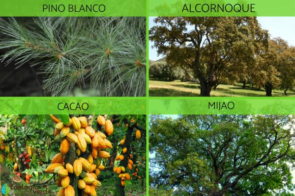

En honduras es muy variada la selva lluviosa o pluvioselva, tambien
clasificado como bosque lluvioso tropica, es uno de los mas impresionantes
como la formacion vegetal, los ecologicos la denominan " formacion higrofila megatermica"
por corresponder a regiones de gran humedad y constantes temoeraturas altas
entre ellas tenemos:
palmeras
plantas de algodon
arboles de pacaya
arboles frutales
plantas medicinales
y muchas diversidades
